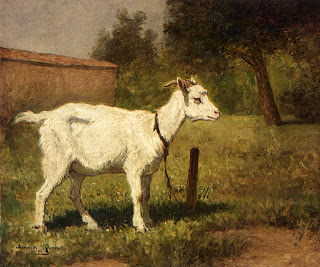

Kiddushin 55 - Animal Lost near Jerusalem
If an animal suitable for an offering was found between Jerusalem and Migdal Eder or at a similar distance (4 miles) from Jerusalem, males are treated as burnt offerings, and females are treated as peace offerings.
But males can also be peace offerings! - We treat them with the stringencies of both, thus, if someone steps forward and voluntarily obligates himself for the monetary value of the lost animal to redeem it, he needs to consecrate the value of both (Rabbi Meir).
Rabbi Yochanan: But redemption, though effective, is not allowed! - He waits for the animal to get a blemish and be redeemed.